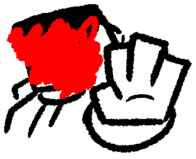

Some information on this page is redacted due to yet unrevealed information or currently missing context. The redacted text will be unredacted when their conditions were met. This is an OC Gallery exclusive warning.
Cyren (or REDACTED) is a rare cyan and orange colored variant of the common Crocodilian species found in the city and he goes by he/him pronouns. He's a gym rat, who's very apparent about wanting to look very noticeable and "out there" but doesn't actually know much about fashion. He lives in an apartment building with Derekk and usually works with Greg and Tryax for the same criminal organization. Most other information about him is mostly hidden away, since he despises his past and a lot of what he used to be very open about.
He's also very deeply afraid of pickles. Yes, like some cats. That last piece of trivia may or may not be important later.

He wasn't much of a gym rat a few years back, he used to be overweight for a lot of his teenage years and early adulthood, but after a humiliating experience his attitude for life switched up completely and he became the strong, but quite secretive person he is today. The meta explanation is that a very very long time ago I drew a random blue croc and came back to it to make it Cyren. Here's the original, excuse the old amateur piece for the sake of preservation:

For his criminal life, he's usually the "tank" of the pack, his agility is very good too, although not as good as Greg's due to his size. His arsenal consists of mostly 3 items: A metal bat with spikes on one of its sides, a metal ball that has the ability to come back with a little propeller like a boomerang and an attachment to his hand that includes a magnet for the metal ball or metal bat and a dart shooter on the back. The magnet can be very powerful, with hand gestures it can be turned off or its power can be adjusted. It's a very fun magic trick on parties.
In this universe, after the events of their equivalent to real life world war 2, the world's leaders came together and finally decided a ban on a list of firearms to be used in wars or to harm people with. Based on how I'm explaining it you can clearly tell there's many loopholes around this sacred golden rule, but it does have an effect on how accessible these firearms actually are. Pistols, rifles, shotguns, snipers, SMGs, and so on are very strictly banned in the majority of the world so it's nearly impossible to get them. Bombs are way weaker due to the lack of research on them, although they're still around and sometimes used in big and impactful tragedies.
What all this means is shock technology and advanced capturing strategies is something the police department uses way more often and criminals tend to use poison and sleeping darts, as well as unique melee weaponry or throwables, aswell as confusing their target or stealth attacking. I know that I basically did nothing by banning firearms in their world but I personally want to come up with more unique weapons in a modern setting that isn't completely sci-fi, since I don't see that direction taken in stories nearly enough. Its a fun creative restriction and lets me practice weapon design.
His friendship dynamics are quite shaky, he's not exactly a social butterfly and very often doesn't pick up on social cues. Reasons could be either out of being straight up ignorant or just confused and hardly trusting. Derekk fancies him quite a bit but bless his soul because Cy is completely blind to the hints... Cyren's temper is short too, so Greg loves fucking with him every chance he gets, which doesn't turn out well a lot of the time.
Art Gallery


{kind=link}
{kind=link}